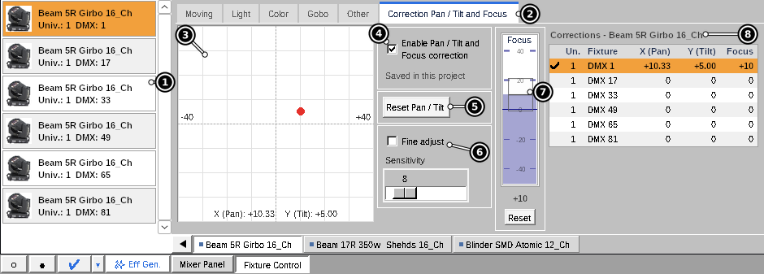

For: FullPlayer
Fixtures of the same type are seldom exactly alike, and they are not always hung straight. The last tab of Fixture Control, Correction Pan / Tilt and Focus, gives each fixture its own correction: a little more or a little less Pan, Tilt and Focus (the lens). The correction is added to everything the fixture plays - buttons, chases, movements, macros, commands, Sound2Light - so that the beams stand parallel and look alike, without changing any button.
Open Fixture Control with the Fixtures button, pick the type on the tabs at the bottom, then the Correction Pan / Tilt and Focus tab, after Moving, Light, Color, Gobo and Other. The tab is there only for the types with Pan and Tilt or with a Focus channel.

The first Beam 5R of Andrei_edit ticked and corrected: +10.33 on Pan, +5 on Tilt, +10 on Focus.
| 1 | The fixtures of the type. Click one to tick it: the pad, the Reset buttons and the Focus slider work on the ticked ones. |
| 2 | The tab. |
| 3 | The pad: the middle is no correction, the edges are 40 DMX steps away (left and down: -40, right and up: +40). Click or drag: the dot is the correction of the first ticked fixture, written under the pad as X (Pan) and Y (Tilt). With several fixtures ticked, all of them move by the same amount, each keeping its own correction. Moving the dot never changes the values of the buttons, only the correction. |
| 4 | Enable Pan / Tilt and Focus correction - ticked (as it starts), the corrections are added to what goes out; not ticked, the fixtures get exactly what is played, and the corrections are kept for later. The pad then reads Correction is off and the table (off). Each project keeps its own setting. |
| 5 | Reset Pan / Tilt - Pan and Tilt of the ticked fixtures back to 0 (their Focus stays). |
| 6 | Fine adjust and Sensitivity, as on the Moving tab: ticked, the dot goes by how far the mouse moves, not to where it is - for the last small steps. |
| 7 | Focus - the Focus correction of the ticked fixtures, -40 to +40 DMX steps; under it its value and Reset (the Focus only). The slider gets taller when the Fixtures panel is made taller. |
| 8 | The table: every fixture of the type with its universe (Un.), its address and its corrections. The ticked ones have a tick and bold text. A click on a row ticks that fixture only; Ctrl + click ticks or unticks it. |
From then on every button and every movement plays as programmed, with each fixture's correction added.
setOffset) and Pan / Tilt Size, before
Invert Pan, Invert Tilt and Swap XY of the patch. The General Mixer shows the values as they are programmed,
and Rec writes them into the steps as they are programmed (the steps stay the same for every fixture); the DMX
Board with Final Output, the 3D and the DMX output show them corrected.S2L.dat) and can be set and saved in the Player too; the
project asks to be saved after a change. A correction belongs to the fixture at its universe and address: moved to
another address in Setup & Patch, the fixture starts again from 0, and a fixture of another type put at that
address does not take it.